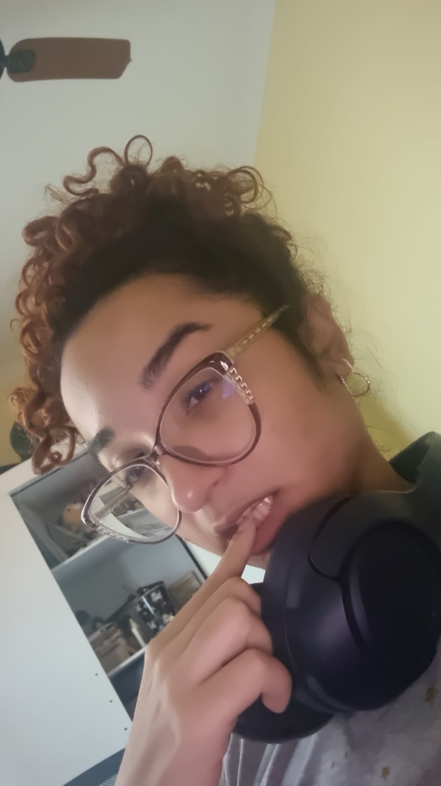

Para meu bebe
Eu te amo, Momo.
Você é minha maior motivação. Em cada dia, eu sinto mais orgulho, mais gratidão e mais vontade de fazer o melhor por nós. Obrigado por ser porto seguro, inspiração e felicidade.
“mente, matéria e coração”
Meu trabalho tem propósito. Meu estudo tem direção. Minha família é meu centro. Minha casa é meu refúgio.
Meu trabalho tem propósito. Meu estudo tem direção. Minha família é meu centro. Minha casa é meu refúgio.